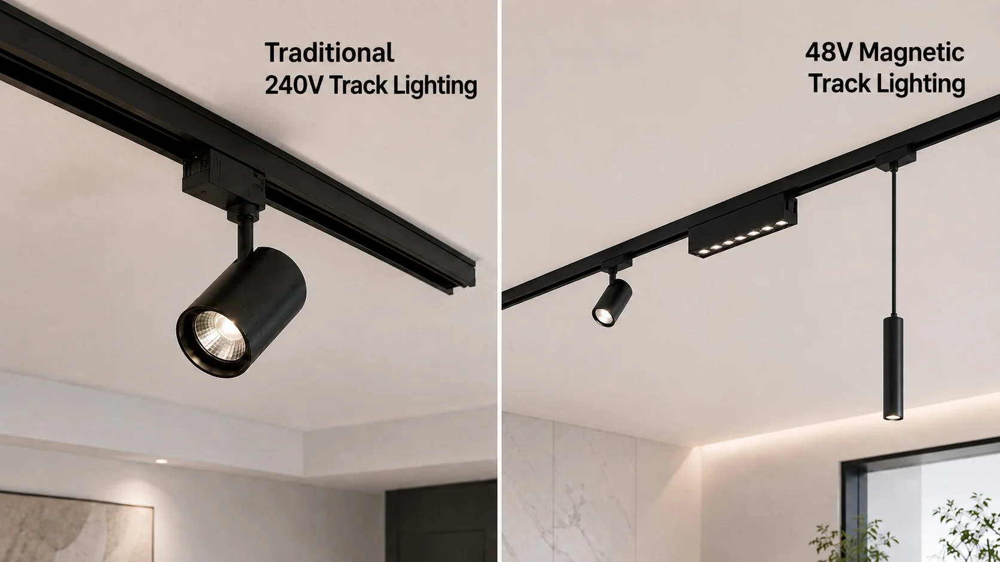
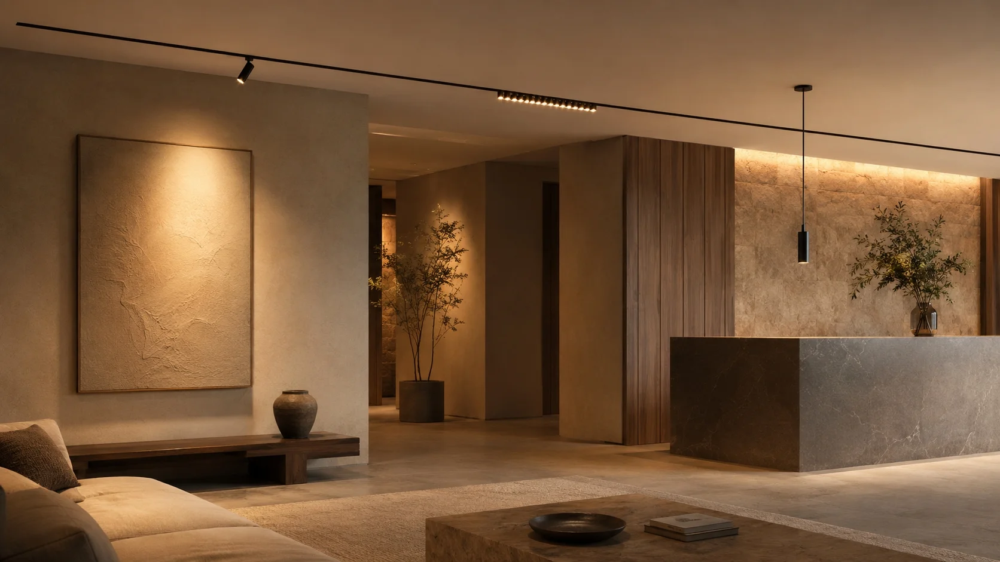

Traditional Track Lighting vs 48V Magnetic Track Lighting: Which One Is Better for Your Project?

A Turkish wholesaler contacted us this week. They supply lighting to mid-to-high-end renovation projects across the country. Their question was simple:
"For mid-to-high-end interiors — retail, villas, hotels — should we go with traditional track or magnetic track? Which one fits better?"
Quick Answer
Traditional 240V track lighting is better for warehouses, workshops and budget-driven projects that require high output and fixed layouts.
48V magnetic track lighting is better for retail stores, hotels, villas and showrooms where flexibility, clean ceiling design and multiple lighting modules are important.
Here's the detailed breakdown.
Traditional Track Lighting
- 240V mains power
- Lower fixture cost
- Higher load capacity
- Better for warehouses / workshops
48V Magnetic Track Lighting
- Low-voltage system
- Snap-on modules
- Slim and modern appearance
- Better for retail / hotels / villas
These differences become clearer when you look at the key specs side by side:
| Consideration | Traditional Track (240V) | Magnetic Track (48V) |
|---|---|---|
| Installation | Hardwired to mains; requires electrician | Low‑voltage; simpler wiring |
| Module swap | Unscrew, disconnect wires | Snap on / snap off, no tools |
| Module types | Spotlights primarily | Spots, floods, grilles, pendants, linear |
| Track profile | Bulky, surface‑mounted | Slim (5.5mm), trimless recessed option |
| Load per track | Up to ~600W per circuit | Driver‑dependent; limited by driver capacity, track length, module wattage and voltage drop |
| Dimming | TRIAC, depends on bulb | DALI, 0‑10V, TRIAC — smooth |
| Safety | 240V exposed when swapping | 48V — touch‑safe |
| Module cost | Lower | Higher (built‑in driver) |

Magnetic track with multiple module types in a mid-to-high-end interior
Magnetic Track Lighting for Retail, Showroom and Hotel Projects
This is where the 48V magnetic track lighting system shines.
A boutique hotel changes its restaurant layout every season. A clothing retailer shifts display racks monthly. For a retail store, a magnetic track light for retail store re‑configuration takes minutes — snap off a spotlight, snap on a flood — no electrician needed. Similarly, for a hotel project, magnetic track lighting for hotel projects means every ballroom or guest floor can be relit without rewiring.
One track can carry spots for accent, floods for wall wash, and pendants for task lighting over a reception desk. A traditional 240V track lighting system can't do that in a single run.
The 48V system also means lower heat output and touch‑safe installation, which matters in spaces where staff or guests might interact with fixtures.
Magnetic Track Lighting for Villa and High-End Home Projects
For residential projects, especially magnetic track lighting for villa and high-end home interiors, the decision often comes down to aesthetics and flexibility.
Homeowners who want a clean, minimalist ceiling tend to prefer this low voltage track lighting system. The slim profile (as thin as 5.5mm) sits flush against the ceiling, and the trimless recessed magnetic track option disappears into the plaster — no bulky rails visible.
In a living room, magnetic track can carry spotlights for artwork, a linear flood for ambient light, and a pendant over the coffee table — all from one track.
Traditional track, by comparison, is more utilitarian. It works in garages, home workshops, or utility spaces where appearance matters less than output.
Traditional 240V Track Lighting for Warehouse, Factory and Workshop
For high‑bay and industrial spaces, traditional 240V track lighting still holds a clear advantage.
A traditional 240V track lighting system delivers higher wattage per track, so fewer runs are needed to light a large area. The fixtures are typically simpler and cheaper to replace. And since the layout rarely changes, the snap‑on flexibility of magnetic track offers no benefit.
If the budget is tight and the ceiling won't be touched for years, traditional track is the practical choice.
Magnetic Track Lighting and Traditional Track Lighting in Mixed Zones
Some projects use both — and that is often the best magnetic track lighting project solution.
A store might use traditional 240V track lighting in the stockroom (high output, low cost) and 48V magnetic track on the sales floor (flexible, clean look). A large villa might use magnetic track in the living areas and traditional 240V track in the garage.
Both systems can be planned within the same electrical layout, but the magnetic track must be powered through a suitable 48V power supply.
Quick Decision Guide
| If your project is… | Choose… |
|---|---|
| Retail, hotel, showroom — layout changes often | Magnetic track (48V) |
| High‑end residential — clean ceiling, mixed beam types | Magnetic track (48V) |
| Warehouse, factory — high output, fixed layout | Traditional track (240V) |
| Mixed zones with different needs | Both, properly zoned |
FAQ: Traditional Track Lighting vs Magnetic Track Lighting
Need to Choose Between Traditional Track and 48V Magnetic Track Lighting for Your Project?
Send us:
- Project type
- Ceiling type
- Track length
- Preferred installation method
- Quantity
- Dimming requirement
Our team will help you match the track, magnetic light modules, drivers and accessories as one complete system.
Contact Us →